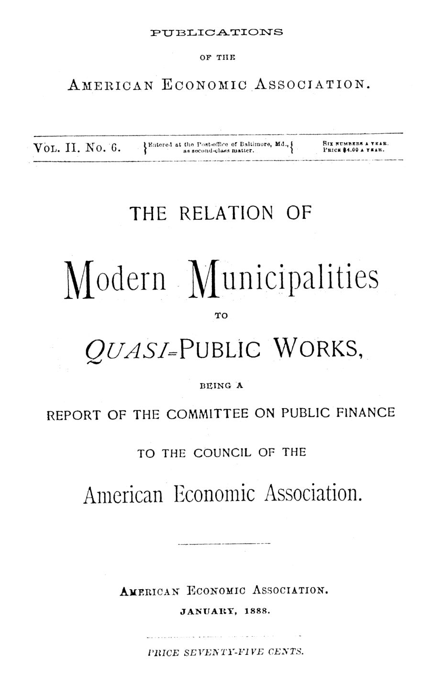

Água, gás, luz e bonde: quem deve servir a cidade?
Leitura: 8 min
Em 1888, um comitê de economistas americanos mostrou que água, gás, luz e bonde escapam à concorrência — e perguntou o que as cidades deveriam fazer a respeito: comprar, regular ou vender a rua.


Detroit, 1884. A Câmara Municipal se prepara para derrubar o veto do prefeito a um contrato de iluminação elétrica. Pouco antes da votação, um vereador se levanta e declara ter recebido a oferta de US$ 1.000 para votar a favor do contrato. O veto cai por oito votos a dois; ele está entre os dois que apoiaram o prefeito.
O episódio está num relatório de 1888 do Comitê de Finanças Públicas da American Economic Association, presidido por Henry C. Adams. São cinco peças: um estudo geral de Adams, uma carta de George W. Knight sobre abastecimento de água, o caso de Detroit narrado pelo jornalista Charles Moore, um estudo de Davis R. Dewey sobre bondes e uma comparação jurídica de Frank J. Goodnow com a Europa. O fio comum são negócios “quase públicos”, que a concorrência não consegue disciplinar.
Por que a concorrência não regula água e gás?
Adams começa por uma definição. Finanças públicas seriam a ciência das necessidades do Estado e dos meios de supri-las. Sem rivais, o Estado deve prestar o melhor serviço ao menor custo; a empresa privada só é justa com o consumidor quando a concorrência a obriga.
A água é o caso extremo. Dos 1.402 municípios americanos com sistema de abastecimento, apenas sete tinham redes duplicadas. Nos outros 1.395 faltava a condição mínima da concorrência: haver duas empresas oferecendo o mesmo serviço.
No gás havia rivais, mas logo vinha a combinação. Em Nova York, uma comissão do Senado estadual concluiu em 1885 que, em dez anos, os consumidores pagaram cerca de US$ 9 milhões além do custo do gás e de dividendos de 10% sobre o capital nominal.
Os preços tampouco seguiam o custo. Entre 683 empresas, o gás custava de 75 centavos a US$ 20 por mil pés cúbicos, quase sempre em saltos redondos de 25 centavos. O preço médio ficava em US$ 1,75; fabricar e armazenar o gás custaria de 50 a 75 centavos.
A urgência vinha do crescimento urbano. Em 1840, só um doze avos da população americana vivia em cidades; em 1888, quase um terço. Chicago passou de 470 mil para 703 mil habitantes em oito anos.
Quem prestava esses serviços? Nenhuma cidade operava bondes, e só cinco eram donas de usinas de gás, entre elas Filadélfia e Richmond. Na água, o quadro era outro: 544 sistemas públicos contra 675 privados. Entre as cidades com mais de 10 mil habitantes que responderam, eram 91 públicos contra 44 privados.
As salvaguardas eram frágeis. Cláusulas de recompra apareciam em 23 de 138 concessões de gás, quase sempre sem dizer como fixar o preço. Limitar dividendos, observa Adams, tirava o incentivo para baratear o serviço. E havia a corrupção.
“As empresas privadas continuarão a dividir com os vereadores os frutos da corrupção.” (private corporations continue to divide with aldermen the fruits of corruption)
A carta de Knight é um relatório de andamento e um elogio do rigor. Das dezenas de cartas enviadas, a maioria ficou sem resposta completa; ele tinha dados satisfatórios de cerca de vinte cidades e recusou-se a generalizar: Detroit, com água farta, e Columbus, com água escassa e cara, não eram típicas. Pediu tempo e um fundo para pesquisa.
“Deve nascer de dados, apoiar-se em dados e terminar em dados.” (it must be born of data, sustained by data, and end in data)
O que Detroit ensinou sobre a luz elétrica?
Até 1884, as duas companhias de gás de Detroit haviam dividido a cidade ao meio, cada uma com monopólio na sua metade. Quando a Câmara abriu a concorrência à eletricidade, a Brush Electric Light Company ofereceu US$ 114.644. A verba do ano era de US$ 95.600; a Brush pôde rebaixar a proposta para US$ 95 mil, enquanto o pedido das companhias de gás para fazer o mesmo foi recusado.
O sistema usava luzes em torres altas, e as torres viraram, nas palavras de Moore, a corrente que prendia a cidade à Brush. A empresa que as fornecia pertencia a três dos maiores acionistas da Brush e cobrou US$ 120 mil por 90 torres; o valor foi acertado em US$ 78 mil. Sem as patentes, poderiam ser reproduzidas por até US$ 35 mil.
Em 1887, a proposta da Brush para três anos somava US$ 427.380. Um jornal sugeriu que a cidade tivesse usina própria; veio novo veto. A Brush baixou para US$ 390.680, cerca de US$ 188,70 por lâmpada ao ano nas luzes existentes, e o contrato passou por cima do veto.
Moore conclui que a contratação de iluminação tende a ser fonte farta de corrupção, e que as cidades donas da usina economizam muito.
Quanto valia uma rua para uma linha de bonde?
Dewey parte de um limite jurídico: o poder de conceder linhas vinha das assembleias estaduais, não das cidades. Ele identifica oito formas de extrair receita das companhias. A mais comum, a licença por carro, variava de US$ 2,50 em Springfield, Illinois, a US$ 50 em Filadélfia e Chicago, quantias irrisórias.
Baltimore foi além. Em 1859, a concessão da primeira linha exigiu 20% da receita bruta para os parques públicos, segundo se dizia, a primeira vez que uma cidade americana cobrou pelo valor da franquia. A taxa caiu depois para 9%, ainda assim rendendo em média US$ 100 mil por ano na década anterior. Nova Orleans preferiu vender concessões: em 1879, três linhas renderam US$ 630 mil à vista.
Em Nova York, uma lei de 1884 permitia leiloar concessões, mas os vereadores entregaram a da Broadway de graça. Em 1886, o leilão tornou-se obrigatório, vencendo quem oferecesse o maior percentual da receita bruta. Em 31 de maio de 1887, a linha da Fulton Street recebeu lance de 35%. Dewey termina cético.
“Dar suas ruas às corporações que controlam mais votos.” (giving their streets to corporations which can control the most votes)
As cidades europeias tinham mais poder?
Goodnow responde que sim. Nos Estados Unidos, a cidade só podia fazer o que a lei enumerasse; o resto era nulo. Entre os estados com lei geral de municípios, apenas três — Missouri, Ohio e Geórgia — autorizavam usinas municipais de gás. Na Alemanha e na França, ao contrário, a cidade tinha ampla liberdade, com aval central para dívidas e impostos.
E usavam essa liberdade. Em 1887, 220 das 482 usinas de gás alemãs eram municipais. Na Inglaterra, onde as cidades assumiram mais serviços diretamente, Birmingham recebeu £ 455.920 do gás em 1883-84. Paris preferiu outro caminho: monopólio concedido a uma empresa, preços fixados em contrato, limite ao capital e reversão das instalações à cidade no fim da concessão.
Na minha leitura
Na minha leitura, o relatório antecipa em mais de um século o vocabulário da regulação moderna: monopólio natural, captura, assimetria de informação, cláusula de reversão. Mas o comitê não chega a um dogma: Adams elogia o sistema misto da água, em que serviços públicos numa cidade servem de régua para os privados na vizinha — concorrência por comparação, não propriedade como fim em si.
Vejo também um aviso para qualquer arranjo: importa menos quem é o dono do que quem negocia o contrato, e com que informação. Detroit pagou caro não por ter escolhido mal a tecnologia, mas por ter deixado a infraestrutura essencial nas mãos de quem também vendia o serviço. E Knight lembra que nenhuma boa política nasce de dados que as prefeituras se recusam a fornecer.
Glossário
- Obras quase públicas
- Serviços prestados por empresas privadas, mas que dependem do uso das ruas e escapam à concorrência, como água, gás, luz e bonde.
- Ações aguadas
- Capital registrado sem desembolso correspondente dos acionistas, que ainda assim exige dividendos pagos pelo consumidor.
- Franquia
- Direito exclusivo, concedido pelo poder público, de explorar um serviço usando as vias da cidade.
- Direito de recompra
- Cláusula que permite à cidade adquirir as instalações da concessionária em certas condições.
- Controle administrativo
- Sistema em que a cidade tem ampla liberdade, mas certos atos dependem de aprovação de autoridades centrais.
Fontes
- The Relation of Modern Municipalities to Quasi-Public Works (relatório do Committee on Public Finance) (pp. 13–87). JSTOR · Internet Archive (PDF)
- Sumário da edição no JSTOR: Publications of the American Economic Association, vol. 2, nº 6.
Documento em domínio público (EUA, publicado antes de 1931), via JSTOR Early Journal Content e Internet Archive. Resumo e comentário do autor deste site, sem afiliação com a American Economic Association. Encontrou um erro? Escreva: a correção é publicada no próprio texto, com data.
← Nº 10 · Guildas medievais: da confraria ao monopólio, e do monopólio ao nome Nº 12 · Contar, classificar, julgar: três textos de Boston, 1887 →